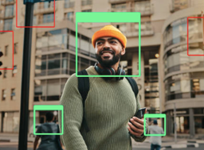

Projects should be identified, assessed, addressed and avoided. Did the FRT get tested enough to be approved for usage in law enforcement? On the City of Detroit website within the 115 crimes that used facial recognition, 40% of them inaccurate- yet at the time, more than a thousand police departments in the country used this technology. The National Institute of Standards and Technology(NIST USA) hold many tests on various FRTs and in one study conducted in 2019, found that in common one – to – one matchings of the technology, Asians and African American faces had higher false positive rates than Caucasian faces, suggesting people of colour or more likely to be mistaken for someone else by the system, like Mr Williams was.
